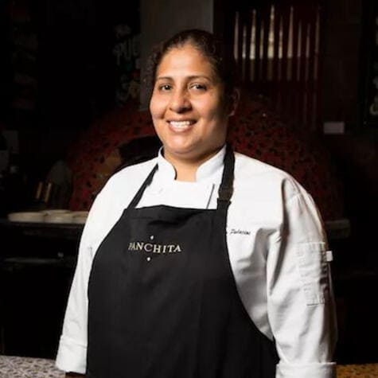
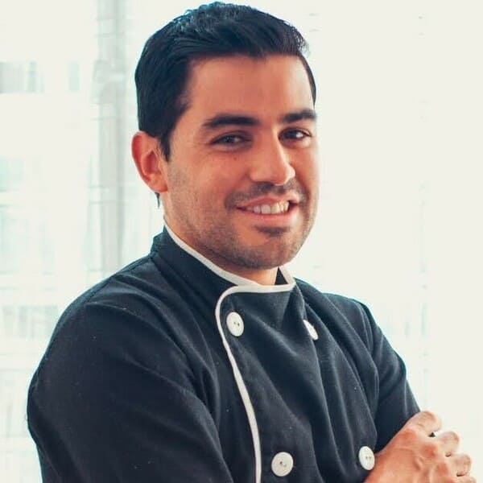
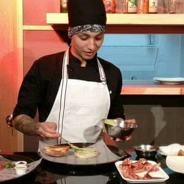
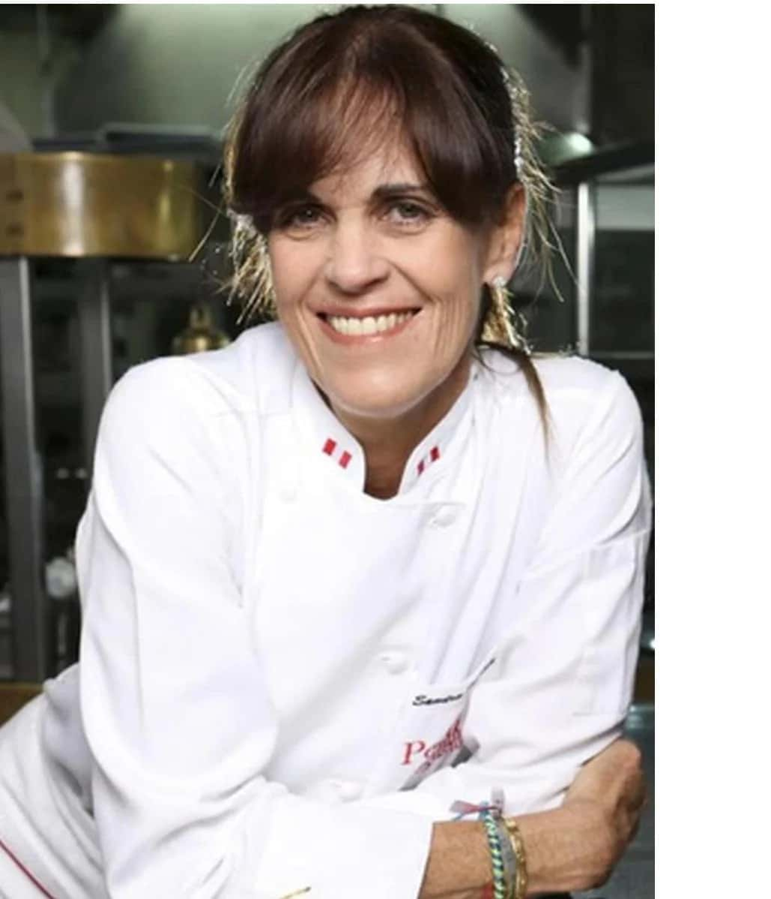

El restaurante nació en un modesto espacio, donde las paredes resonaban con risas, música y el aroma tentador de especias y hierbas frescas. La abuela Rosa, junto con su familia, trabajaba incansablemente para perfeccionar cada receta, desde el mofongo hasta el asopao, pasando por el arroz con gandules. Lo que hacía único a El Cocinero no era solo la exquisitez de sus platillos, sino el ambiente cálido y acogedor que se tejía entre las mesas. Era un lugar donde las historias fluían tan libremente como el ron en las noches festivas, y donde cada visita se convertía en una experiencia inolvidable. Con el tiempo, las siguientes generaciones se unieron a la tradición, fusionando técnicas modernas con el legado de la abuela Rosa. El menú se expandió, pero siempre manteniendo el corazón de la auténtica cocina criolla. La familia no solo compartía platos, sino también la pasión y el amor que tenían por preservar sus raíces culinarias. El Cocinero se convirtió en un faro para aquellos que buscaban más que una simple comida; era un lugar donde la historia y la gastronomía se entrelazaban para crear una experiencia única. Los lugareños veneraban el restaurante como un símbolo de identidad cultural, mientras que los visitantes lo consideraban un portal a las delicias de una tierra lejana. Con el tiempo, El Cocinero creció, pero siempre mantuvo su esencia. El restaurante se convirtió en un pilar de la comunidad, patrocinando eventos locales y siendo parte integral de festividades culturales. La abuela Rosa ya no estaba presente físicamente, pero su espíritu seguía vivo en cada rincón del lugar. Hoy en día, El Cocinero sigue siendo un lugar de encuentro para amigos y familiares, un santuario de la cocina criolla donde la historia se sigue escribiendo en cada plato que sale de la cocina. La llama encendida por la abuela Rosa nunca se apaga, y El Cocinero continúa siendo un faro que ilumina los corazones y paladares de quienes buscan la esencia misma de la auténtica comida criolla.
|  |  |  |  |
| Panchita | Juan Carlos Pérez | Luis Martínez | Ana Jiménez |
|
Con más de dos décadas de experiencia, Panchita es la mente creativa detrás de nuestra cocina criolla. Su amor por ingredientes frescos y locales se refleja en cada plato, fusionando tradición con un toque moderno. |
Juan Carlos, con formación en las mejores escuelas de pastelería, aporta un toque dulce a nuestras tradiciones. Sus postres son una mezcla perfecta entre lo clásico y lo contemporáneo. |
Luis, con experiencia global, coordina la armonía en nuestra cocina, fusionando técnicas internacionales con la esencia criolla. |
Ana lidera nuestro equipo de servicio con hospitalidad y conocimiento enciclopédico. Su misión es hacer que cada visita a Sabor Criollo sea inolvidable. |